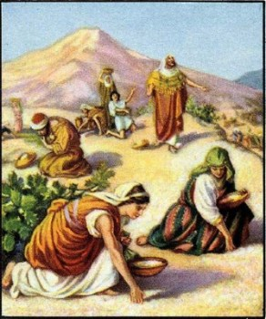
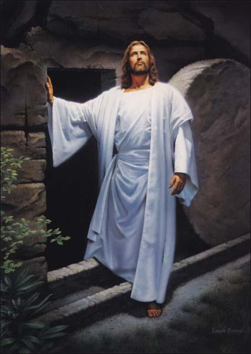

Why does God allow Good people to suffer?
This is a question that I believe many people have been asking since the beginning of time. It's actually a question that I got asked a lot on my mission and sometimes I just didn't quite know what to say.
I've come to realize that there is not one right answer to this question, and that's ok. It doesn't mean that God doesn't have a plan or that he's just watching everything play out. I know that the Plan of Salvation is real and that God knows the beginning from the end and everything will happen the way it is supposed to happen (and it's important that we do our part as well). It's because of this that I'm able to have and exercise faith in times of uncertainty. That in and of itself could be one of the reasons that we go through sore trials on this earth, to build faith and learn to rely on God the Father and our Savior Jesus Christ. Sometimes, bad things might happen to us due to our own transgressions, or the transgressions of others. I don't think this necessarily means that God always punishes us for our mistakes, because he understands that we are imperfect. Godly sorrow is a consequence of sinning, and sometimes there are just consequences that follow our mistakes due to the nature of the Fall of Man.
We might suffer because of the actions of others. This can be very frustrating and seem unfair at times. The scriptures teach that Christ will be the perfect judge of us all so we can rest assured that justice and mercy will served in the end, but it's in these experiences that we can learn to develop patience. Patience is something that I've been struggling with for a while now, but the story of the Israelites receiving their daily mana has opened my eyes a bit. I realize that God works in a similar way with us. Maybe we are suffering because we aren't receiving desired blessings right now. It could be that God is working with us little by little, giving us the blessings we need when we need them to prepare us for the blessings we desire and for greater life experiences.
Sometimes we suffer due to the simple fact that we live in fallen state. Our bodies are imperfect and subject to disease, sorrow and pain. I may not exactly know why there is so much suffering on this earth, but I do know if we are righteous and strive to keep God's commandments and follow the Savior's example we will find peace and happiness. We will one day be able to fully appreciate a fulness of joy because we have seen the bitter.
Why is death necessary?
The 2nd question I had wondered about was why death is essential to the plan. Death itself can be a huge burden and source of sadness in this life, especially when it happens so suddenly, and to people who are so young. Though I’ve already known this throughout my life, I have been blessed to find many reminders throughout this class that death is indeed not the end of our existence.
Here's a quote from President Nelson that is one of my absolute favorites:
“Life does not begin with birth, nor does it end with death. Prior to our birth, we dwelled as spirit children with our Father in Heaven. There we eagerly anticipated the possibility of coming to earth and obtaining a physical body. Knowingly we wanted the risks of mortality, which would allow the exercise of agency and accountability. This life [was to become] a probationary state; a time to prepare to meet God.” (Alma 12:24.) But we regarded the returning home as the best part of that long-awaited trip, just as we do now. Before embarking on any journey, we like to have some assurance of a round-trip ticket. Moreover, we can’t fully appreciate joyful reunions later without tearful separations now. The only way to take sorrow out of death is to take love out of life.”
Just as birth is the start of our mortal existence, death is the end of our mortal existence on earth, but it also opens up the doors to the next part of our spiritual progression. Death is the means in which we can return to be in the presence of our Father in Heaven and of our loved ones who have passed on. It is the way in which our bodies transition from a state of imperfection to a state of perfection through the resurrection. Like President Nelson said, I think we will realize that when we are resurrected and reunited with those we love, that reunion will be that much sweeter because of the separation caused by death.
How Much of it is Literal or Figurative?
The third question I had regarding the Fall of Man, or the Garden of Eden in general was how much of the story was literal and how much was figurative. One thing we know for certain is that Adam and Eve did exist. They were real people and were even seen by Jospeh Fielding Smith in a vison of the spirit world. Some parts of the story may be literal (we don't know for sure) but even if that is the case, it doesn't take away any meaning or significance from the story.
An author named Jospeh Fielding McConkie says that “The imagery used to veil the account of Eve's birth is most beautiful, particularly so in a day when there is so much confusion about the role of women. Symbolically, she was not taken from the bones of Adam's head nor from the bones of his heel, for it is not the place of woman to be either above the man or beneath him. Her place is at his side, and so she is taken, in the figurative sense, from his rib-the bone that girds the side and rests closest to the heart."
So really, it's not necessarily important to know whether that story was literal or figurative, but it's important to know that men and women are equal and should be side by side. What it comes down to is that we should not always try to use human reasoning to explain or interpret certain events in the scriptures. God's ways and thoughts are not our own. It's also important that we listen to what the spirit tells us. We know that Jesus Chirst is real, and I'm sure we've felt his atonement in our lives. He rose from the dead so that we one day might do the same, and there's nothing figurative about that. With this knowledge, and the knowledge we have of the Gospel and of the Plan of Salvation, I don't think we should be worrying about whether or not there were actually giants in the book of Genesis.
